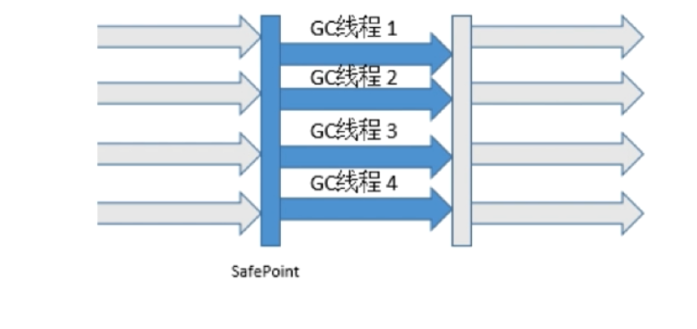

Java GC
Java 垃圾回收机制回收分配给对象的内存，正因为有了这个机制，我们能看似不用关心内存的释放，将其交由 JVM 来管理。垃圾回收机制几乎成为 Java 之后出生语言的标配，目前 Java 的回收机制仍在演进。
对象被判定为垃圾的标准
- 没有被其它对象引用的对象
- 引用计数算法
- 判断对象的引用数量
- 通过判断对象的引用数量来决定对象是否可以被回收
- 每个对象实例都有一个引用计数器，被引用则 + 1，完成引用则 - 1
- 任何引用对象为 0 的对象实例可被当作垃圾收集
- 优点：执行效率高，程序执行受影响较小
- 缺点：无法检测出循环引用的情况，导致内存泄漏（父子对象互相引用）
- 判断对象的引用数量
- 可达性分析算法
- 通过判断对象的引用链是否可达来决定对象是否可以被回收
- 可以作为 GC Root 的对象
- 虚拟机中引用的对象（栈帧中的本地变量表）（如 new obj，cp>局部变量，jbbl 被销毁钱的对象成为 GCR）
- 方法区中的常量引用对象（如类定义常量，常量保存 obj 地址，obj 成为 GCR）
- 方法区中的类静态属性引用对象
- 本地方法栈中 JNI（Native 方法） 的引用对象（非 Java 构成的 obj）
- 活跃线程的引用对象
- 通过判断对象的引用链是否可达来决定对象是否可以被回收
- 引用计数算法
垃圾回收算法
标记 - 清除（Mark and Sweep）
- 标记：从根集合进行扫描，对存活的对象进行标记（首先可达性算法）
- 清除：对堆内存从头到尾进行线性遍历，回收不可达对象内存
- 碎片化，产生不连续的内存碎片，需要分配较大内存对象时无法找到连续内存，而不得不触发另一次垃圾收集工作
复制（Copying）
- 分为对象面和空闲面
- 对象在对象面上创建
- 存活的对象被从对象面复制到空闲面
- 将对象面所有对象内存清楚
- 解决碎片化问题
- 顺序分配内存，简单高效
- 适用于对象存活率低的场景
标记 - 整理（Compacting）
- 应对 50% 空间保证 100% 的对象存活的极端情况需要另外 50% 空间担保，老年代不适用 Copying
- 标记：从根集合进行扫描，对存活的对象进行标记
- 清除：移动所有存活的对象，且按照内存地址次序依次排列，然后将末端内存地址以后的内存全部回收
- 避免内存不连续性
- 不用设置两块内存互换
- 适用于存活率高的场景
分代收集（Generational Collector）
- 垃圾回收算法的组合拳
- 按照对象生命周期的不同划分区域以采用不同的垃圾回收算法
- 目的：提高 JVM 回收效率
- jdk6, jdk7
- jdk8（年轻代存活率低：Copying；老年代存活率高：Compacting || Mark and Sweap）
- jdk6, jdk7
- GC 的分类
- Minor GC
- Full GC
- 年轻代：尽可能快速地收集掉那些生命周期短的对象
- Eden 区（放不下可能放置 Survivor，甚至老年代中）
- 两个 Survivor 区
- 年轻代垃圾回收演示
- 默认 15 岁到老年代，MaxTenuringThreshold
- 如何晋升老年代
- 经历一定 Minor 次数依然存活的对象
- Survivor 区中存放不下的对象
- 新生成的大对象（-XX:+PretenuerSizeThreshold 来控制大对象大小）
- 常用的调优参数
- -XX:SurvivorRatio：Eden 和 Survivor 的比值，默认 8：1
- -XX:NewRatio：老年代和年轻代内存大小比例，比如值为 2，老年代是年轻代的两倍，即年轻代占据内存的 3/1
- 新生代和老年代的总大小如何决定：-Xms 堆的初始值，-Xmx 堆能达到的最大值
- -XX:MaxTenuringThreshold：对象从年轻代晋升到老年代经过 GC 次数的最大阀值
- 老年代：存放生命周期较长的对象
- 回收算法
- 标记 - 清理算法
- 标记 - 整理算法
- Full GC 和 Major GC（回收同时通常也伴随对年轻代堆内存的回收）
- Full 比 Minor 慢，但执行频率低
- 触发 Full GC 条件
- 老年代空间不足（为了避免，最好不要创建太大对象）
- 永久代空间不足（jdk 7 之前的版本）
- CMS GC 时出现 promotion failed, concurrent mode failure
- Minor GC 晋升到老年代的平均大小大于老年代的剩余空间
- 调用 System.gc()
- 使用 RMI 来进行 RPC 或管理的 JDK 应用，每小时执行 1 次 Full GC 2
- 触发 Full GC 条件
- 回收算法
- Stop the World
- JVM 由于要执行 GC 而停止了应用程序的执行
- 任何一种 GC 算法都会发生
- 多数 GC 优化通过减少 STW 发生的事件提高性能
- Safepoint
- 分析过程中对象引用关系不会发生变化的点
- 产生地方：方法调用；循环跳转；异常跳转等
- 安全点数量得适中
常见垃圾收集器
- JVM 的运行模式
- Server（反，java -version）
- Client（启动快，轻量，稳定后速度慢）
- 垃圾收集器之间的联系
年轻代常见垃圾收集器
Serial（-XX:UseSerialGC，复制）
- 单线程收集，进行垃圾收集时，必须暂停所有工作线程
- 简单高效，Client 模式下默认的年轻代收集器
ParNew（-XX:+UseParNewGC，复制）
- 多线程收集，其余的行为、特点和 Serial 收集器一样
- 单核执行效率不如 Serial，在多核下执行优势（线程交互开销，使用 ParGCThreads 限制垃圾收集线程数）
Parallel Scavenge（-XX:+UseParallelGC，复制）
- 吞吐量 = 运行用户代码时间/（运行用户代码时间+垃圾收集时间）
- 比起关注用户线程停顿时间，更关注吞吐量
- 在多核下执行优势，Server 模式下默认的年轻代收集器
常见老年代垃圾收集器
Serial Old（-XX:+UseSerialOldGC，标记-整理）
- 单线程收集，进行垃圾收集时，必须暂停所有工作线程
- 简单高效，Client 模式下默认的老轻代收集器
Parallel Old（-XX:+UseParallelOldGC，标记-整理）
- 多线程，吞吐量优先
- 
CMS（-XX:+UseConcMarkSweepGC，标记-清除）
- 几乎与用户 Thr 同时工作，几乎表不完全做到不需 Stop-the-World，尽可能缩短停顿时间。对停顿敏感，并能提供更高硬件，此优势。JVM 内较多存活较长对象，此适合。
- *初始标记：Stop-the-World
- 并发标记：并发追溯标记，程序不会停顿
- 并发预清理：查找执行并发标记阶段从年轻代晋升到老年代的对象
- *重新标记：暂停虚拟机，扫描 CMS 堆中剩余对象
- 并发清理：清理垃圾对象，程序不会停顿
- 并发重置：重置 CMS 收集器的数据结构
G1（-XX:+UseG1GC，复制 + 标记-整理）
- Garbage First 收集器的特点
- 并行和并发
- 分代收集
- 空间整合
- 可预测的停顿
- Garbage First 收集器
- 将整个 Java 堆内存划分成多个大小相等的 Rejion
- 年轻代和老年代不再物理隔离
- jdk11: Epsilon GC, ZGC
强引用，软引用，弱引用，虚引用
Strong Reference
- 最普遍的引用：Object obj = new Object()
- 当内存不足时，虚拟机宁可抛出 OutOfMemoryError 终止程序也不会回收具有强引用的对象
- 通过将对象设置为 null 来弱化引用，使其回收
Soft Reference
对象处在有用但非必须状态
只有当内存空间不足时，GC 会回收该引用的对象的内存
实现内存敏感的高速缓存
```java
String str = new String(“abc”);
SoftReferencesoftRef = new SoftReference (str); 1
2
3
4
5
6
7
8
9
10
11
12
13
14
### Weak Reference
- 非必须的对象，比软引用更弱一些
- GC 时会被回收（无论内存是否紧缺）
- 被回收的概率也不大，因为 GC 线程优先级比较低
- 适用于引用偶尔被使用且不影响垃圾收集的对象
- ```java
String str = new String("abc");
WeakReference<String> weakRef = new WeakReference<String>(str);
Phantom Reference
不会决定对象的生命周期
任何时候都可能被垃圾收集器回收
跟踪对象被垃圾收集器回收的活动，起哨兵作用
必须和引用队列 ReferenceQueue 联合使用
String str = new String("abc"); ReferenceQueue queue = new ReferenceQueue(); PhantomReference ref = new PhantomReference(str, queue);
强 > 软 > 弱 > 虚
- 类层次结构
- 引用队列
- 无实际存储结构，存储逻辑依赖于内部结点之间的关系来表达